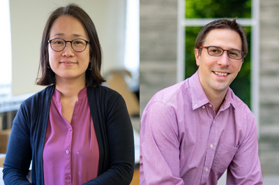
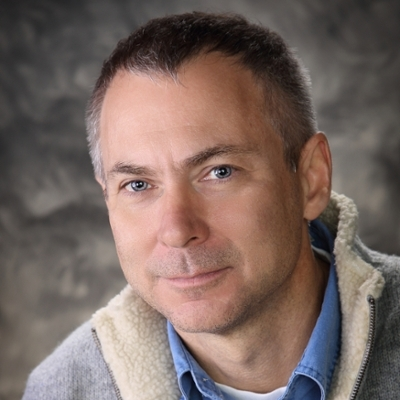
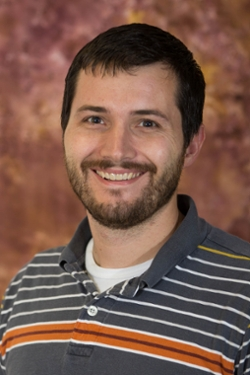

-

Dr. Hyewon & Joseph Pechkis
Dr. Hyewon & Joseph Pechkis were initially my professors for Modern Physics (PHYS 300) and Methods of Theoretical Physics (PHYS 314) respectively. It was not until the summer of 2023 when I joined their group starting a new project working on the development of a new mobile application for the general education course "Physics of Music".
-
Dr. Shane Mayor
I met Dr. Mayor initially because I was a Lab Assistant for the Environmental Sensing course (ERTH 440) which he normally teaches but was on sabbatical for this term. Towards the end of the term, Dr. Mayor returned to the school at which point I expressed my interest in working on a new project for him over the winter break. I worked on writing new data acquisition software for the LiDAR system.

-

Dr. Paul Arpin
Dr. Arpin was my professor for Electronics for Scientists (PHYS 327) and Advanced Laboratory (PHYS 427W). For my final project in Advanced Lab, I worked with Dr. Arpin in his lab to help get his lab going again as not many students have been working with Dr. Arpin over summers in recent years (due to low enrollment).